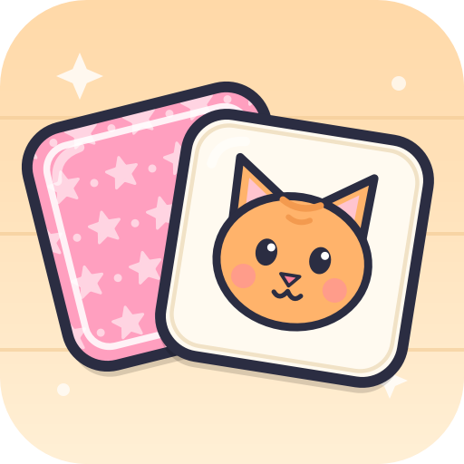
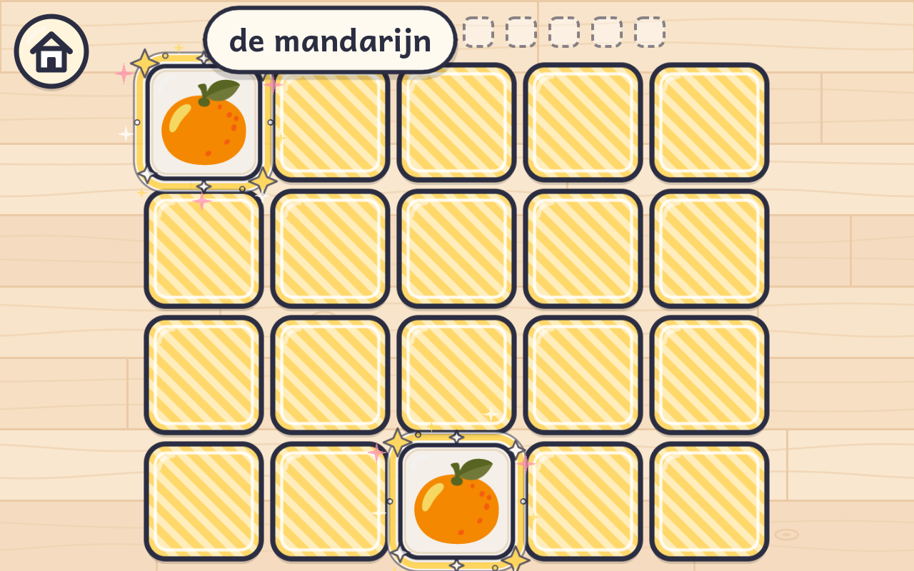
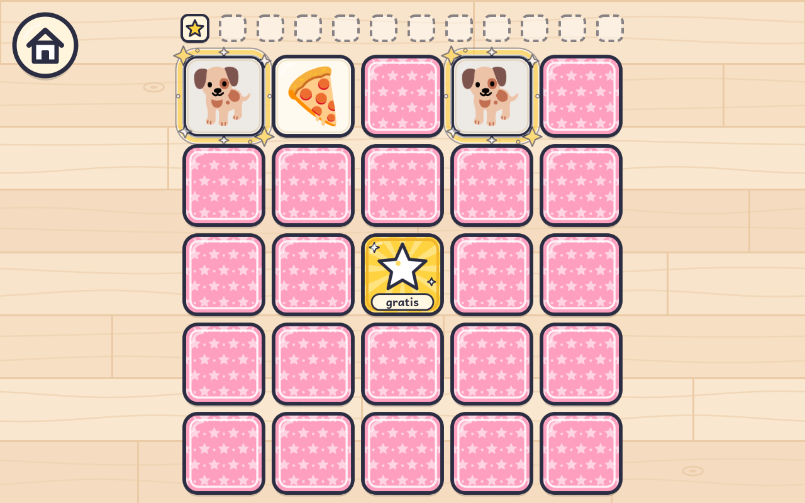
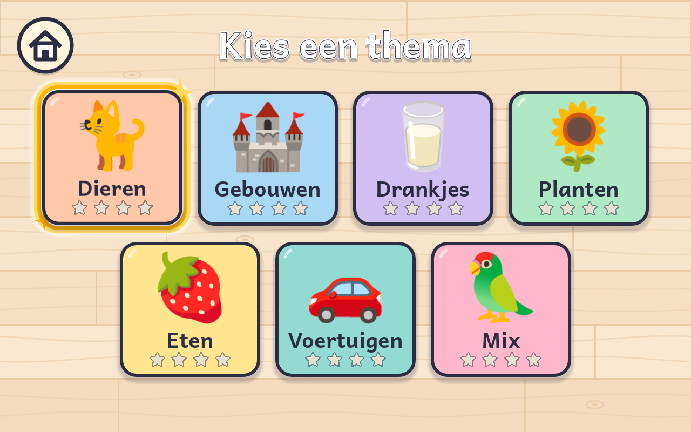

Memory
Vind alle paartjes
4 tot 7 jaar
Draai twee kaarten om en zoek de plaatjes die bij elkaar horen: dieren, gebouwen, drankjes, planten, eten en voertuigen. Heb je een paartje? Dan zie je er ook meteen het woord bij!
Zo installeer je het
- Download het bestand met de knop hierboven (op de tablet zelf) of scan de QR-code.
- Tik op het gedownloade bestand. Vraagt Android of je apps uit deze bron mag installeren? Zet dan Toestaan aan.
- Tik op Installeren. Klaar! Het spel staat nu tussen de apps.
Meldt Play Protect dat de app onbekend is? Kies Toch installeren. Het spel staat niet in de Play Store.
Scan met de tablet
Open de camera van de tablet of telefoon en richt op de code.
Over dit spel
- Vier borden: 4×4, 4×5, 4×6 en 5×5 (met een gratis jokerkaart in het midden)
- Zeven thema's, ook een mix van alles
- Geen tijdsdruk, geen verliezen: elke ronde eindigt met een feestje
- Voor kinderen van 4 tot 7 jaar
Veilig voor kinderen: geen advertenties, geen aankopen, geen account en er worden geen gegevens verzameld of verstuurd.



Updates
Nieuwe versies verschijnen op deze pagina. Een nieuwe versie installeer je gewoon over de oude heen; je sterren blijven bewaard.
Wil je automatisch updaten? Installeer dan de gratis app Obtainium en voeg
https://github.com/nbeostar/happy-game-releases toe met het filter memory-v.